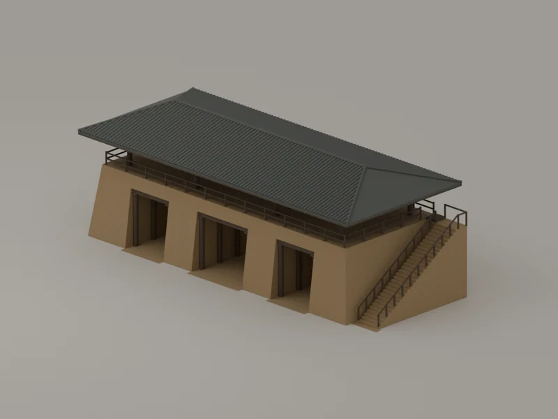
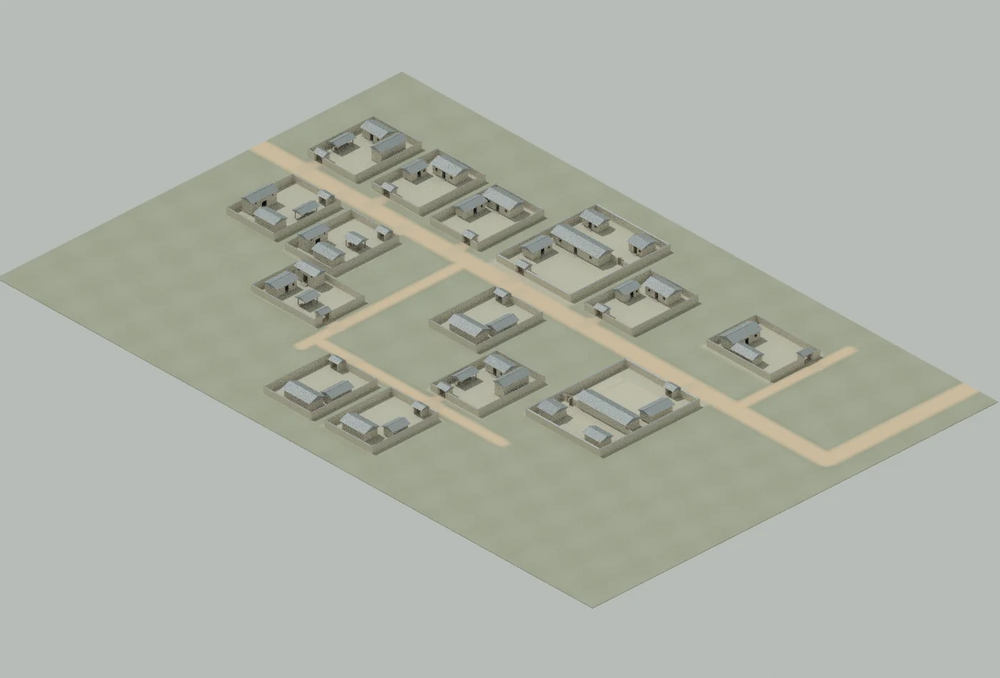
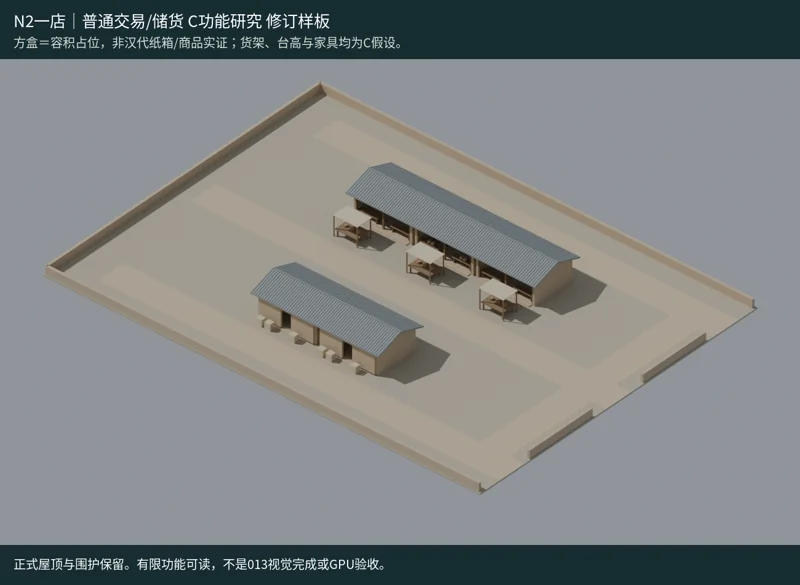
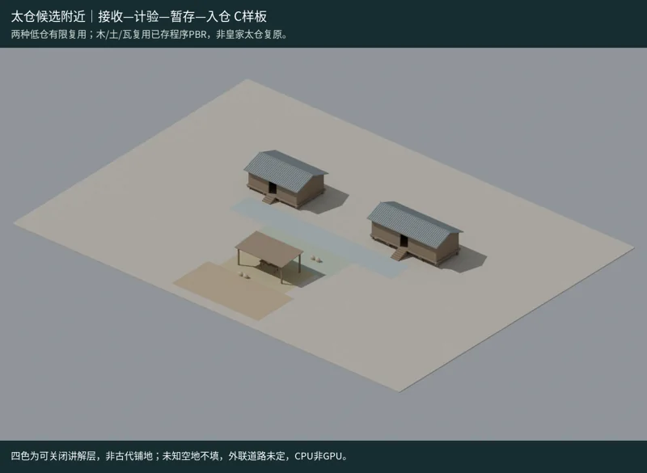
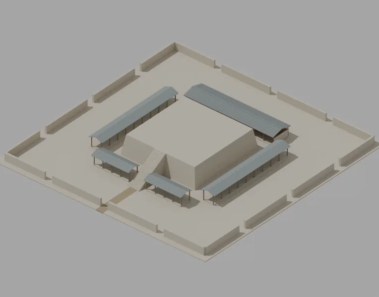
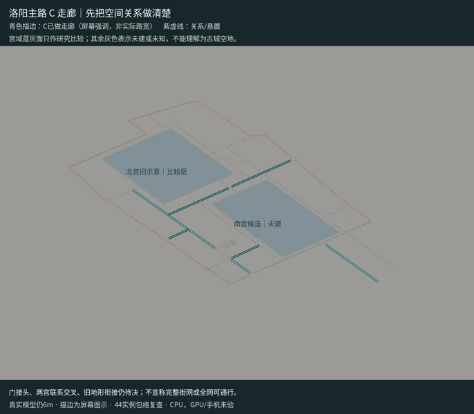

01 / 城垣与城门城垣已入城 · 六门研究候选
从城门，认出城的边界。
沿着已建城垣近看广阳门。另有旄门等六座城门研究候选，可独立打开，查看形制与依据。
从城垣，走进已建街区。
THE CITY, AS IT GROWS
先看南侧已经布置的 14 座院落，再按章节查看城门、市肆与仓储的现有模型。

拖动转动 · 滚轮缩放 · 点选建筑，下方查看手记
当前城景已放在纸上，可以继续翻阅下面的建设记录。
从南侧住宅开始44 座已入城院落 · 五店三摊与仓储。另有北侧院落、六座城门、灵台与太学的研究候选。
SIX CHAPTERS / WORK IN PROGRESS
每一章都留下现有模型，
也留下继续建设的线索。
六章配图为已有模型渲染记录。

01 / 城垣与城门沿着已建城垣近看广阳门。另有旄门等六座城门研究候选，可独立打开，查看形制与依据。
现有住宅原型已在街区中布置。近看门前、院心与沿边房屋，远看院落如何连成片。

03 / 市肆店铺和摊位组成一处市肆。沿街读它的入口、货物和留给人行的地方。

04 / 仓储作业仓体、收纳棚与作业区域一同保留，观察货物抵达、暂存和搬运的空间关系。

05 / 礼制建筑灵台与太学作为研究候选独立展示。在这里转动细看它们，城市落位仍在研究中。

06 / 道路与地形从地面和道路读城市的骨架，查看现有模型怎样接入同一个街区。
“已入城”记录已经布置到城景中的模型。“研究候选”记录可独立查看、城市落位仍在研究中的模型。史料中的有据、推测与未知，在建筑便签和研究手记里分别展开。